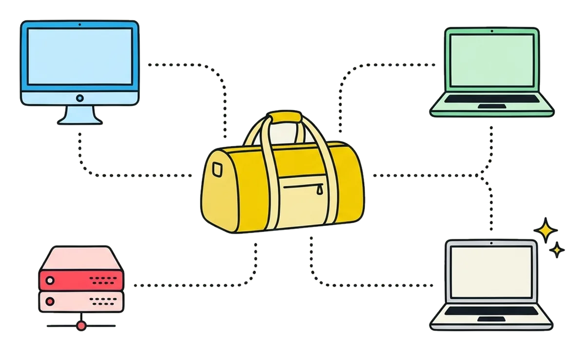
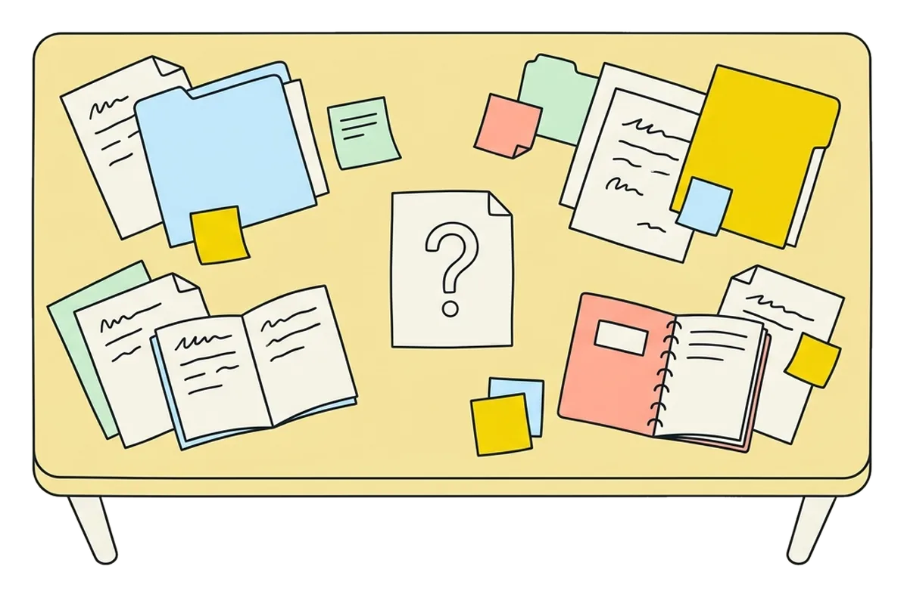
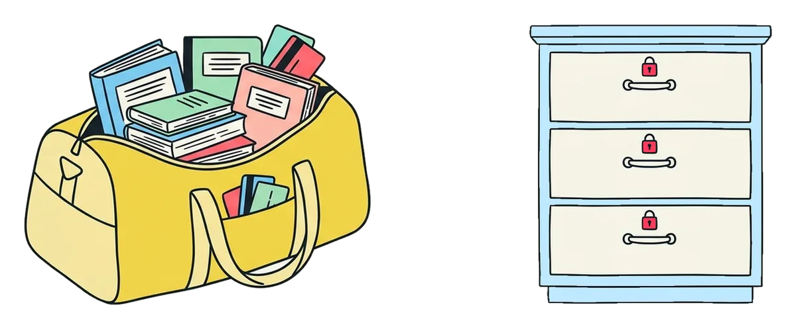
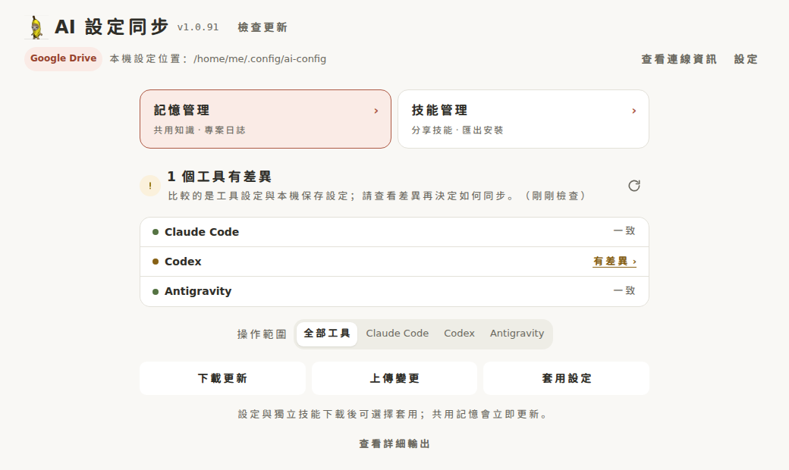
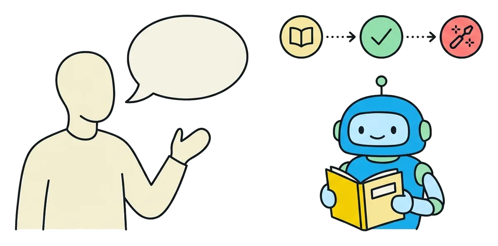

讓 AI 設定
跟著你走
換裝置、換工具，也不用再從頭教一次。
- Claude Code
- Codex
- Antigravity

桌機筆電遠端主機新裝置你的設定包標誌取自 Simple Icons（CC0），各為 Anthropic、OpenAI、Google、Git 專案的商標。
設定散在
每台電腦裡
換一台，就少一條規則、少一個技能，也分不清哪份才是最新的。

一個私人置物櫃，
只放該帶走的
放在你自己的 Google Drive 或私人 Git，每台電腦都從這一份出發。
規則、技能、記憶
登入資訊（從不上傳）、只屬於這台的設定
Google Drive私人 Git

跟你走留在這台平常只做四件事
acg pullacg statusacg applyacg push上傳前先列出要存什麼，你確認才送出；套用前先備份，遇到衝突會直接告訴你。
不想打指令？
Desktop 也行
不必先學會指令。打開 Desktop 就先看狀況，下載、上傳、套用各一顆按鈕。
Claude Code、Codex、Antigravity 的同步狀況、登入與變更，都在同一頁查看。
下載 acg.exe 點兩下就開；也能從指令列 acg gui 開啟。其他系統目前是實驗版。

或者，直接把目的
告訴 AI
說你想完成什麼就好。AI 會先讀指南、檢查狀況，再跟你確認要動哪些。

「幫我把這台的 AI 設定同步好。」
寫一次技能，
三個工具都能用
在 Claude Code 寫好的技能，acg share <技能> 一次，Codex 和 Antigravity 也拿得到。
Claude 桌面版的 Chat 不讀本機技能：用 acg package <技能> 打成 ZIP，到 Settings → Customize → Skills 手動上傳。
一本筆記，
跨電腦也跨專案
三個工具讀同一本：全域一層，每個專案各一層。你說「記住」才寫進去。
acg memory enable 啟用後開新會話才讀得到。
選用：acg memory autopush enable 4 每天 4 點自動上傳，不逐次確認，仍會檢查有沒有夾帶登入資訊。
~/work/shop ≠ D:\code\shop，Git 遠端相同 → 同一份
me/blog
只在有這個專案的電腦上
↑↓ 你的置物櫃：Google Drive 或私人 Git
換個會話，
接上同一條線
只有兩個動作：收工時交接，下一個會話接手。
交接跟著筆記同步：在桌機交接，到筆電也接得上。/acg: 指令需先裝 Claude Code 的 acg plugin。
/acg:handoff 或直接說「交接」
寫下做到哪、下一步是什麼。
/acg:pickup 或直接說「接著做」
讀回進度，這則交接就結案。
開著的 AI，
可以互相傳話
像找同事一樣，叫名字就送得到。
acg msg list 看現在開著哪些會話、誰收得到acg msg send <名稱> <訊息> 直接送過去
先跑一次 acg msg setup，之後照常開 claude、codex 就收得到（Claude 每次開啟確認一次）。Antigravity 能送、不能收。目前只支援 Linux / macOS。
9 點上班，
7 點先喚醒
用量每 5 小時算一輪，從第一次使用才開始計時。keepalive 在你選的時間用最便宜的模型先送一句話，讓這一輪提早開始。
每個工具各開一次：acg keepalive enable claude（Codex、Antigravity 換成 codex、agy）。預設 07:00、12:05、17:10、22:15：Claude 從整點起算，Codex 從送出那一秒起算，晚幾分鐘兩邊都接得上。預設關閉，同一個帳號開一台就夠。
9 點才開始用上班時間 2 輪
7 點先喚醒上班時間 3 輪
從這裡開始
裝好 acg，它會接著問你設定要放在哪裡。
Linux / macOScurl -fsSL https://raw.githubusercontent.com/CSL426/ai-config/main/install.sh | bash
Windows（PowerShell）irm https://raw.githubusercontent.com/CSL426/ai-config/main/install.ps1 | iex
指令列、Desktop，或直接請 AI：「幫我在這台裝好並設定 acg」（先把 github.com/CSL426/ai-config 給它）。三條路都通。